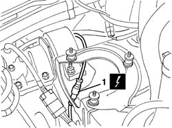
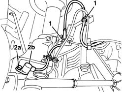

3340A30 RPM SENSOR (ONE) OF ONE L/H OR R/H FRONT WHEEL - R+R
- Path
- Procedures > 33 BRAKING SYSTEM > 3340 ANTI-LOCK BRAKE SYSTEM (ABS) > 3340A ABS CHECK/ADJUSTMENT DEVICES > 3340A30 RPM SENSOR (ONE) OF ONE L/H OR R/H FRONT WHEEL - R+R
- Kind
- repair procedure (removal / refitting; the operation number is the code)
- Applies to
- all engines; all production periods
- Interactive page
- https://sloeber94.github.io/elrnDB-fDct/en/#/244001131
Applies to: all engines; all production periods
 Removing
Removing
 Refitting
Refitting- Position the vehicle on the lift.
- Remove the front wheel.
Op. 1048A10 AIR CLEANER FILTERING ELEMENT - REPLACE
- < R1 > (Left ABS sensor only)
1. Disconnect the electrical connection (the one on the left side is shown).
 | Description | Connector |
|---|---|---|
1 | Left front wheel sensor for ABS | K070 |
| Description | Connector |
|---|---|---|
1 | Right front wheel sensor for ABS | K071 |

Applies to: all engines; all production periods
1. Raise the vehicle and release the electrical wiring for the ABS sensor from the retainers.
2. Undo the bolts (2a) and remove the ABS sensor and wiring (2b).

Applies to: all engines; all production periods
Refitting
Removing- Check that the ABS sensor and wiring is not damaged.
- Position the ABS sensor in the housing.
- Tighten the ABS sensor bolt.
 | Value - daNm | Fastening | Component | Ø |
|---|---|---|---|---|
. | 0.8 | Bolt | FRONT A.B.S. SENSOR | M6 |
- Fasten the electrical wiring for the ABS sensor to the retainers.
- Lower the vehicle and connect the electrical connection.
| Description | Connector |
|---|---|---|
. | Left front wheel sensor for ABS | K070 |
| Description | Connector |
|---|---|---|
. | Right front wheel sensor for ABS | K071 |
Op. 1048A10 AIR CLEANER FILTERING ELEMENT - REPLACE
- < R1 > (Left ABS sensor only)
- Refit the front wheel.
- Remove the vehicle from the lift.
- Check the operation of the braking system using the Examiner or other diagnostic equipment.